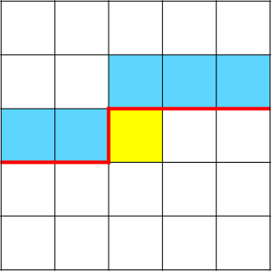

狀態壓縮 DP
遇到多個狀態()的題目，如果依然用多維陣列，在除錯方面會有困難，為了避免在除錯花費大量時間和適當減少程式碼長度，可以將每個狀態用編號來表示。
UVa 10898 - Combo Deal
給定每種單點和套餐的價錢，現在問每種食物分別買 份最少需要多少錢。
最多種有 種食物，每種最多需要 份，可利用 到 這些數字表示每種組合，例如 代表六種食物分別有 份。
二進位
集合常以二進位表示取或不取，比賽中常見以集合當為狀態的，在狀態壓縮 DP 中常會用到 &、>>、<< 這三種二元運算子
1 2 | |
UVa 10944 (TSP 旅行銷售員問題)
給定人的起始位置和 個物品位置，問收集所有物品再回到原點的最短距離。
設位置 是人所在的位置，先計算每個物品(包含人的起始位置)之間的距離。
目前已經收集 ，目前在第 樣物品的位置，每個狀態 枚舉所有未走過的點，得到新的狀態 ，轉移方向依二進位位元數由少到多。
UVa 11795 - Mega Man's Mission
今天有 個敵人要擊敗，一開始拿的武器不可以擊敗所有人，但是擊敗敵人後可以強奪他的武器攻擊別人，每種武器可以擊敗不同敵人，問有幾種攻擊順序可以擊敗所有敵人。
先把每個武器可以擊敗的敵人用二進位表示， 代表擊敗集合 的方法數， 代表擊敗集合 後可以擊敗哪些敵人，每個狀態 可以攻擊的士兵 未走過的和 的交集。
可參考 NaiveRed's Blog 的題解。
Atcoder Beginner Contest 213 G Connectivity 2
給定一張圖，問有幾張子圖其中點 和點 相連。
令 ，是點集的一個子集合， 點集 的子圖數， 點集 的連通子圖數，點 和點 相連的子圖數 。
， 為 內的邊數。
為所有點集 的子圖數，扣到所有 的非連通圖，根據排容原理，，這裡特別提一點，這個式子其實是從 裡面選一些點當 再從 選一堆點當 ，也就是把點分三堆，時間複雜度 。
輪廓線 DP
在 的格子，決策過程為從上到下、從左到右，用一條線分開決策和未決策的格子，這條線成為輪廓線（下圖紅線）。

決策點(黃格子)需要考慮上方和左方的格子，因為需要保存輪廓線上格子的資訊，被稱為輪廓線 DP。
UVa 11270 - Tiling Dominoes
給定 的方塊，有幾種辦法可以被 的骨牌放滿?
對於每一格格子，通過上方和左方格子的資訊（0:沒放、1:沒放），判斷是否能直放、橫放或不放骨牌。

- 狀態： 從 往前連續 格格子狀態為 的情況下，排列的方格數。
轉移的方向是一個座標轉移到另一個座標，利用滾動陣列技巧，在實作時只要開一個 的陣列即可。
1 2 3 4 5 6 7 8 9 10 11 12 13 14 15 16 17 18 19 20 21 22 23 24 25 26 27 28 29 30 31 32 33 34 35 36 37 38 39 40 41 42 43 44 45 46 47 48 | |
插頭 DP
插頭代表格子之間的連通性，如果 和 相連，那麼 有一個右插頭， 有一個左插頭，插頭是成雙成對存在。
Ural 1519 - Formula 1
給定 的方格，請問有幾種哈密頓迴路覆蓋所有沒有障礙的格子?
一個合法的哈密頓迴路，每個沒有障礙的格子都有兩個插頭，且輪廓線以上是由數條互不相交的路徑組成。
把插頭分成三種：無狀態插頭、左括號插頭、右括號插頭，分別用 表示